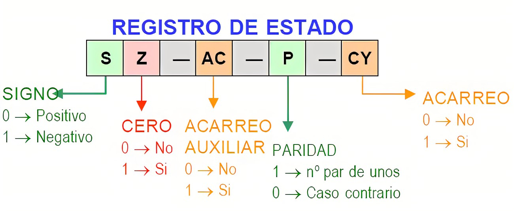

Registro de datos de entrada y salida (I/O BR): es una área temporal en donde se lleva a cabo el intercambio de datos entre el procesador y el dispositivo de entrada y salida que esta especificado en IOAR.
Registro de instrucciones (IR): contiene la dirección de la siguiente instrucción que se va a ejecutar.
Palabras de estado del programa (PSW): contiene códigos de condición junto con otras informaciones de estado como el signo, acarro, desbordamiento, entre otras.
